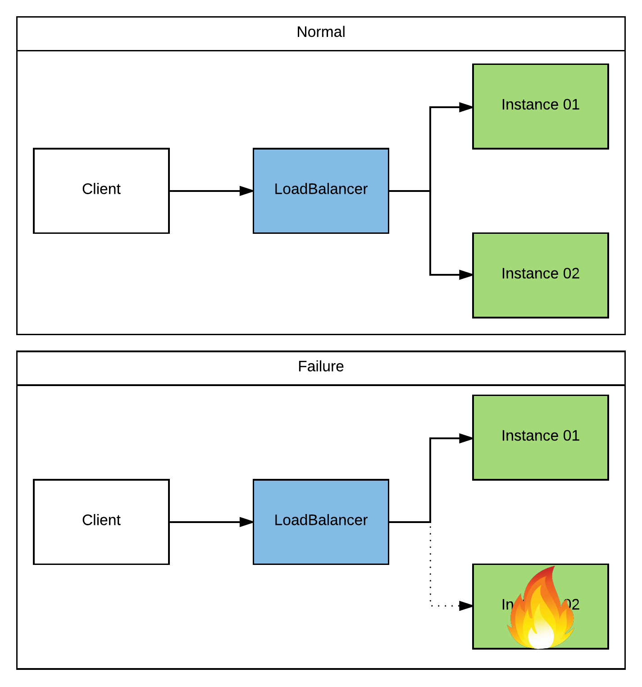
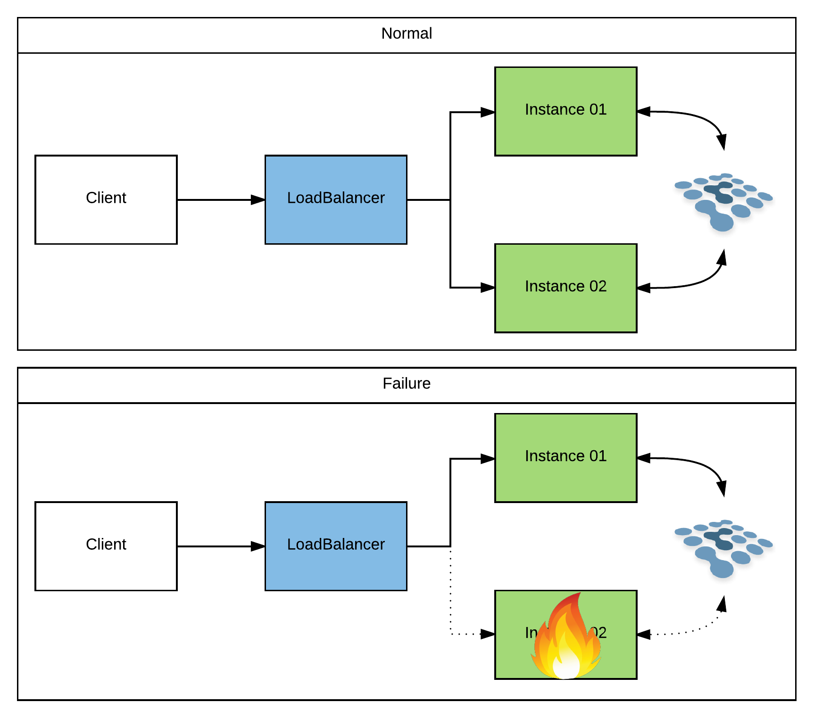
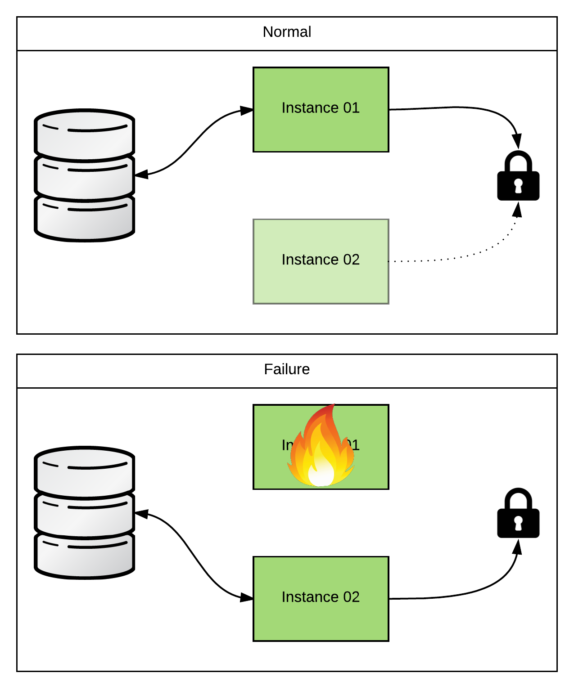
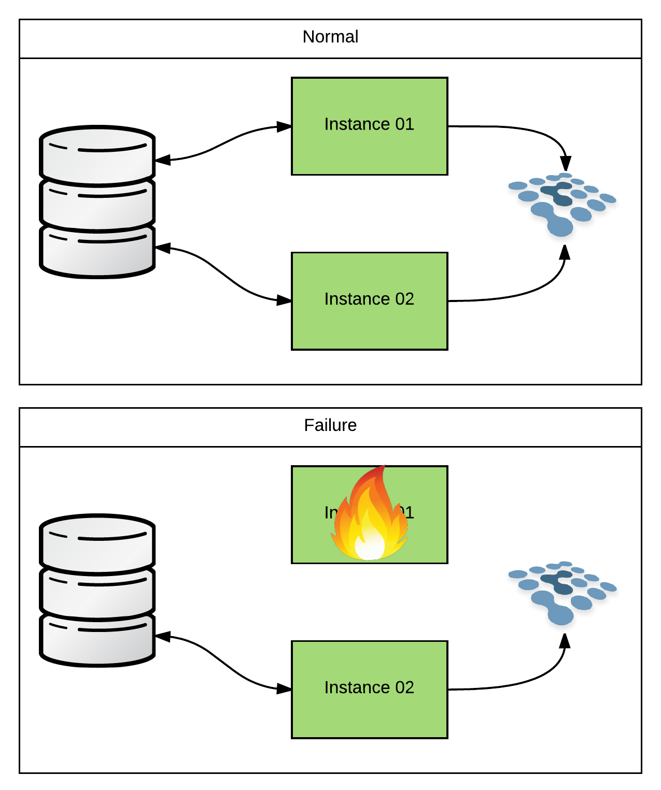
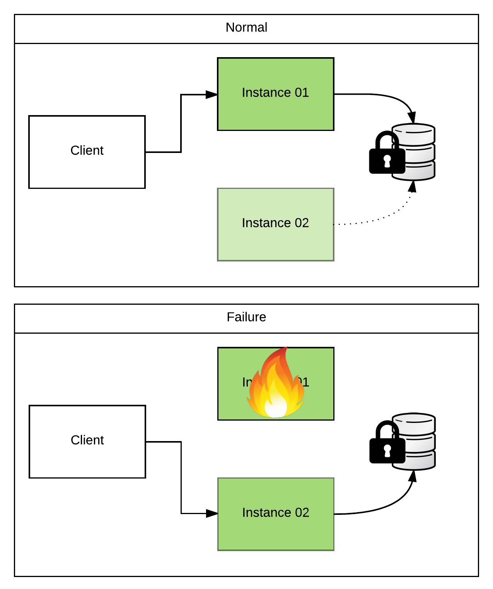
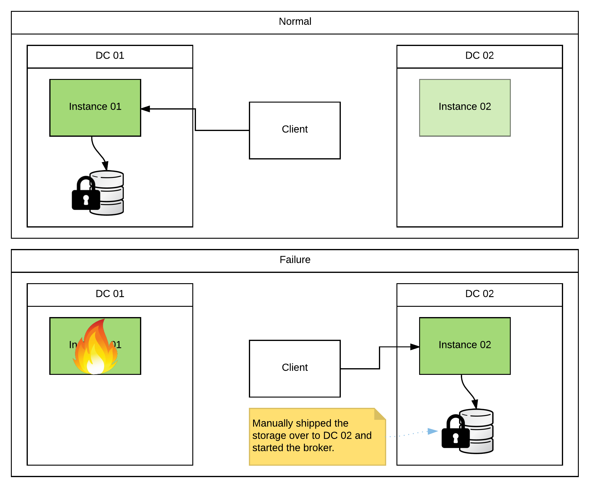
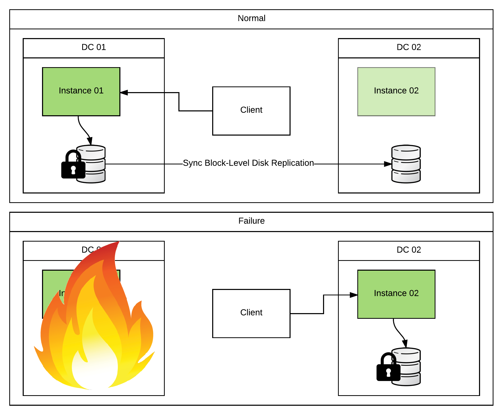
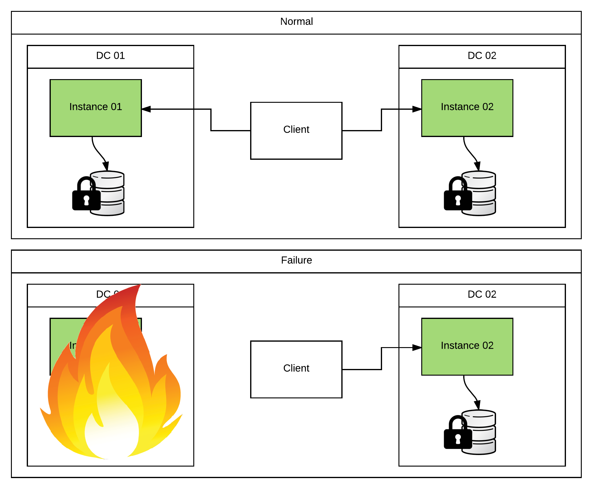

HA Deployments With Fuse
When out and about, I often get the question: “How do I setup HA (high availability) with Red Hat’s JBoss Fuse?”. People ask this question and they expect a simple, straightforward answer. And why shouldn’t they? The question is simple enough right? I could ask the same question about something like Tomcat and get a well documented answer involving little more than a loadbalancer. Unfortunately, the answer for Fuse is a bit more involved and usually starts with the annoying response of “it depends”.
So let’s expand on that a bit… Considering my previous example of Tomcat (which is just a Servlet container), what protocol does it speak? Easy! It only talks 1 protocol… HTTP. But what protocol does Fuse speak? Well… since it’s an integration framework, the answer is several. It may be consuming from a REST service and placing the contents in files. Or maybe it’s accepting HL7 messages over TCP and dumping them onto JMS queues. And the way that you’d make a REST service HA is very different from the way that you’d make a file consumer HA (which is very different from the way you’d make a JMS broker HA, …). So you can see that while the answer of “it depends” might be a bit annoying, it is actually the most accurate answer I could give.
As of this writing, the Camel Components page lists 240 different components. And there’s no way I’m going to cover all of those in a blog post. So lets just focus on the one’s I run into most often.
HTTP
Many of the available Camel components speak HTTP. Among those would be CXFRS for REST services, CXF for SOAP services, and Jetty or Servlet for low level HTTP services. And because HTTP is so prolific, it is probably the most easily understood HA scenario we’ll cover.
With HTTP, there are two modes that we need to talk about (stateless, & stateful).
Of the two, stateless is the most common and definitely the most recommended approach. It scales well, requires no coordination in a cluster, and is extremely easy to set up. You simply run however many instances you’d like of your service. The instances don’t have to know about eachother, and can be co-located or can be spread across datacenters. Once you have your services stood up, you simply place a loadbalancer (ie, Apache HTTPd, NGINX, HAProxy, …) in front of them. There are even strategies that can be used to make the loadbalancers themselves HA (ie, hosting multiple instances with their own class A DNS records). So if any instance of your service goes down, the loadbalancer will simply redirect traffic to one of the other available instances. The client will send in his next request and have no idea that he isn’t talking to the same instance. Honestly, this topic has been covered so much that I don’t need to go into great detail about it. But here’s a very generic picture:

Stateful HTTP apps have fallen out of favor over the last decade or so. Which is a good thing in my opinion! They usually require some sort of session replication and/or coordination among the cluster. So now all of your instances need to know about eachother (limiting our ability to scale). And every time an object/value is placed in the session, it must be replicated to the other members (causing quite a bit of overhead that compounds as the cluster grows). We can mitigate some of these problems by being creative with our architecture. For instance, instead of having every member in the cluster connected in a mesh configuration we can split our servers into multiple meshes and do “sticky” loadbalancing to them. But it’s all a lot of hassle that you shouldn’t deal with if you can find a way to make your apps stateless instead. Once again, this is a topic that has been covered many times on the internet. The only thing specific to Fuse (and the only thing I’ll elaborate on in this blog) is setting up session replication for the Karaf container.
For the most part, if you’re running Camel on any JavaEE app server (and tying to its Servlet container), it will have its own mechanism for session replication. Most of the time, this is completely hidden away from you, and you get it for “free” just by setting up your servers in a cluster configuration. For instance, JBoss EAP uses an internal Infinispan cache to store its session data. If you run your EAP instances in “domain” mode, they will automatically be clustered and will replicate sessions accordingly. While you can override the cache settings and tweak them to fit your needs, you usually don’t have to mess with it. However, if you are running on a Karaf container, you’ll have to do a bit more of the setup yourself. This is because Karaf doesn’t assume that you’re using sessions, or even that you’re using Servlets. And if you do decide to use Servlets, it doesn’t assume which Servlet container you’ll use (ie, Tomcat, Jetty, …). So when you use any of the HTTP based components that I listed above on Karaf, they will (by default) fire up an embedded Jetty container. Luckily, Jetty is pluggable enough that it allows you to swap out its session management implementation. So you could, for instance, setup and configure Jetty to use an Infinispan cluster. Take a look at the Jetty Docs for more details. In any case, the mechanism by which a session is handled is transparent to your application. So it’s really more of a configuration detail. And just to stay consistent, here’s another generic picture:

HL7/MLLP
HL7/MLLP is a TCP based protocol for the healthcare industry. Digging in a bit more, HL7 (Health Level Seven) is the definition of the format of the message (which can be text or XML based), and MLLP (Minimal Lower Layer Protocol) just defines a couple of bytes that wrap the message so we know where to start/stop when reading it in. Support for HL7v2 is provided via the HL7 component in conjunction with a TCP transport component for doing the actual socket handling (ie, Mina, or Netty). There is some work being done on an MLLP component that will make it a bit simpler to work with, but as of this writing it’s still a bit early.
All of that said, regardless of the transport component that you choose, or whether you’re working with HL7v2 (text) or HL7v3 (XML), the interaction is stateless. That is to say that a client sends in a request message and synchronously receives an “ack/nack” response. That is the entire transaction. Any other interaction is a separate message/ack and is handled independently. So no server-side coordination is required by the message acceptors (see “Note“ below). And because no server-side coordination is required, you can just use any available TCP loadbalancer (similar to what we did with stateless HTTP above).
Note: You may have a requirement to resequence the messages and process them in order. In which case, you can take a look at my previous blog: Ordered Messaging With ActiveMQ & Camel.
Here’s a sample NGINX loadbalancer configuration that I used for a recent engagement:
1 | events { |
And here’s a (really simple) sample architecture:

File/FTP
When consuming files using the File or FTP components, there are a couple of different strategies that you can use for an HA setup: active/passive, and active/active.
In an active/passive configuration, you will have a single (master) instance polling for files. All of the other instances (slaves) will be waiting on some kind of lock. The slave instances will not begin polling for files until they detect that the master is no longer alive and well. In this way, we make sure that multiple JVMs running the same file poller config aren’t stepping on eachother’s toes while trying to consume the files. So how do we setup this active/passive coordination? If you’re using Fabric8 v1.x to cluster your Karaf instances, you can just use the Master component. It exploits the fact that a Fabric cluster uses a ZooKeeper ensemble internally and uses it as a locking mechanism. Nice and simple! But what if you’re not running in a Fabric cluster? You could stand up your own ZooKeeper ensemble… But that adds a bit of overhead that you might not be ok with if you’re not using it for anything else. Does that mean that you’re out of luck? Heck no! Camel rocks! We can just create our own custom RoutePolicy to do the same thing. Here’s an example that I threw together for a customer recently: https://github.com/joshdreagan/camel-singleton-policy.

Often times, you won’t need the highest possible performance when polling for files. That’s because the most common use case is that I receive a few files for batch processing maybe once a day. So I can probably handle the actual polling/processing on a single instance. And in that case, the active/passive configuration would be perfectly fine. But what if I’m not receiving batch files once a day? What if I’m processing satellite perturbation data (TONS of tiny files) coming in 24/7 in a neverending stream? Maybe now I want to take advantage of my entire cluster to poll/process in an active/active configuration. That way I can scale it up… Luckily, Camel makes this extremely easy. Because, again, Camel rocks! If you look at the available options for the file component, you’ll notice that it basically has an Idempotent Consumer pattern baked right in (take a look at the inProgressRepository option). What’s more, it’s extremely flexible. It just needs any implementation of org.apache.camel.spi.IdempotentRepository. And there are already several implementations canned and ready to go. So you can use anything from Infinispan to a relational DB to coordinate your consumers. Here’s some sample code that uses Infinispan: https://github.com/joshdreagan/clustered-file-consumer. Feel free to plagiarize!

JMS (ActiveMQ)
JMS (ActiveMQ) is definitely the most difficult HA scenario that I’ll cover. Which is why I procrastinated and saved it until the end. Well… sort of… When talking about JMS on Fuse, you have to specify whether you mean from a client’s perspective, or from the broker’s perspective.
HA from the client’s perspective is actually quite simple. You just use the Failover transport when creating your javax.jms.ConnectionFactory and the failover is handled for you. If a broker goes down, the client libraries will transparently reconnect to the next broker (whether it’s a slave, or another master) and keep on chugging with little more than a blip in performance. But let’s spend a little time and talk about the more complex case of making the broker itself HA.
When we say “make the broker HA”, what we really mean is “make the in-flight data that the broker is storing HA”. Because of the nature of messaging and it’s typical use case/requirements, this almost always ends up being a trade-off for performance vs reliability. So first let’s cover the easiest, best performing solution.
In a Master/Slave (active/passive) architecture, two or more brokers point to the same physical data store (typically KahaDB). Because the store can only be written to by one instance at a time, we must use some form of locking (similar to what we talked about in the File/FTP section). The lock implementation that ActiveMQ uses is pluggable. So you can specify your own custom ones. But there are defaults for each of the persistence adapters and I rarely see customers override them.
Let me give a concrete example… When setting up ActiveMQ as a master/slave pair (non-Fabric managed) and using KahaDB, you would likely place the KahaDB storage directory on a shared filesystem (ie, NFSv4). Unless you customized the configuration, ActiveMQ would default to using an actual “lock” file. When the instances came up, they would both attempt to acquire a filesystem-level lock on that file. Whoever got there first would become master, would open up the KahaDB for read/write, and would open up any listeners to begin accepting client connections. Any other instances would fail to get the lock and would begin try-polling until they got it. And until then, they would not read/write the KahaDB, or accept client connections. So they’re passive…

This is the simplest setup, but does have some caveats. First, we’ll need to setup a shared filesystem that both instances can see. This will likely be something like an NFSv4 share. And because we need an actual filesystem-level lock, we must use a filesystem that supports them (which is why I used the example of NFSv4 above and not NFSv3). You’ll probably also want to make the storage that hosts your NFS shares HA as well. So you’ll likely use a SAN or some hardware appliance that provides this functionality. If you do so, make sure that any data duplication/backup that occurs is fully synchronous and that filesystem-level locks are preserved during a failover! Looking at you EMC… Next, because of the shared storage, high throughput, and file locking requirements, the master/slave instances must live in the same datacenter. I’ve seen many clients try to skirt this requirement and it always ends badly. However, if set up correctly this provides nearly immediate failover of in-flight messages within a datacenter as well as high message throughput. So if this satisfies your requirements, stop here.
So what if I have a requirement for HA across datacenters? Ok… let’s negotiate a little more. The simplest & fastest solution is to use the master/slave setup outlined above, but also have a warm site setup in another DC. If you experience a full DC outage, you can manually migrate the storage hosting your KahaDB to the backup DC, configure an ActiveMQ instance to point to it, and bring it online. It doesn’t care where the KahaDB came from, or if it was previously owned by another instance. It will simply read in any messages that are currently stored and begin processing/delivering them to consumers. If you do this, make sure to remember not to mount the storage up to the primary again when it comes back online or you will end up with duplicate messages. Alternately, you can just wait until the downed DC comes back online. As long as there is no storage loss, all of your messages are safe and will be processed. So it really comes down to the SLA (Service-Level Agreement) that you must support, how likely you think a full DC outage is to occur, and how much manual interaction you’re ok with if it does.

Well, what if I have to protect against a real DC outage? This is affectionately known in the defense industry as “the smoking-hole scenario”. That is to say, what if I can’t be guaranteed that I’ll be able to migrate storage during an outage because my DC is not simply down, but rather destroyed? Well first things first… Prepare to make some serious performance tradeoffs. I cannot stress this enough! You will not be processing large sets of data while synchronously replicating across a WAN.
One solution that I’ve seen customers use is to replicate the storage using some sort of block-level disk replication software. DRBD works well enough in this situation because it gives you a little bit of flexibility over performance vs absolute reliability (look at modes B or C in their docs (not A)). Basically, every write at the filesystem level is a blocking call. That call usually returns as soon as the data has been physically written to the disk. In the case of a block-level replication solution, that blocking call will not return until the data has been written to both the primary and the backup disks. Because this all occurs at the filesystem level, it is completely out of ActiveMQ’s hands. It just thinks it’s been given really slow storage. One thing to note here is that you would not set up an ActiveMQ Master/Slave pair using this technology because the filesystem-level locks would not replicate. So you would do the manual failover to the warm site as described above. The difference is that you won’t have to migrate the storage as it’s already been replicated safely to the backup DC.

The second set of solutions that I’ve seen are a decent tick faster (still not blazing though), but add a bit complication to the clients. They’re both based on some variation of fanout/multicast. The basic gist of it is that the producer clients will send a copy of every message to a broker on both DCs. This isn’t that bad for the producers since the Fanout transport handles all of the work for them. In fact, you can even toss in ActiveMQ’s Proxy Connector and the producer clients won’t have to change a bit.

I know what you’re thinking… That doesn’t sound too bad. Where’s all this “complication” you were rambling on about? Don’t get too excited. We just haven’t gotten there yet. The added complication comes on the consumer/processing side. Basically, I now have duplicate messages that I’m processing. And I either have to prevent them using something like Idempotent Consumers or embrace them by adding complication to my code.
The idempotent consumer strategy looks attractive because Camel makes it extremely easy. I just have to set up some sort of shared org.apache.camel.spi.IdempotentRepository and add a few lines of Camel routing to my JMS consumers. Take a look at the https://github.com/joshdreagan/clustered-amq-examples example (specifically the “clustered-amq-examples-idempotent” module) for more details. The problem is that I have to set up a repository that synchronously replicates its data across a WAN. So aren’t I back to the same exact problem I had before? Well… not quite. Definitely similar though. I’ll get a small performance boost since the producers are multicasting the message to both brokers in parallel (but blocking until they get back the configured minimum number of “acks”). And the synchronous replication that I mentioned is only an idempotent key (ie, the JMSMessageID) and not the entire message itself. Also, all instances are active. So I’m getting a bit more loadbalancing for my consumer clients. And they can failover faster than if I had a warm site setup (since I don’t have to perform a manual failover). That being said, don’t expect the performance to be stellar.
But what if I want my performance to be stellar? I told you you can’t have it! But we can possibly get a tiny bit better. The second option that I mentioned is to embrace the duplicates. Let’s expand on that. If I multicast/fanout a copy of every message to both brokers, I’m going to take that hit. If I want a fully synchronous, total data backup, there’s just no getting around it. But I don’t necessarily have to have my consumers coordinate. What if I just went ahead and processed the duplicates? Would the world end? Let’s use a concrete example. Let’s pretend that my consumers were accepting messages and placing each one into a relational DB. And let’s say that I might have some REST service that, when invoked with some ID, returns a record for that ID from that relational DB. If I inserted both copies of the message, my REST service would return two records. That’s not ideal! But what if it didn’t? What if I just had my REST service run a ever-so-slightly more complicated query that just returned the first record it found? I don’t care which one. They’re both the same. Now I’m back to the result that I wanted. And I have a pretty robust system that can handle duplicate records (both intentional and unintentional). Not too shabby! Now since you’re never satisfied, you might be asking about all of that duplicated data taking up extra space. Well that’s easy enough to fix… Simply have a “cleanup” job that runs at some predifined interval and removes any duplicates that it finds. I don’t care when it runs, or which record it ends up removing. My application will always return the correct result. Take a look at the https://github.com/joshdreagan/clustered-amq-examples example (specifically the “clustered-amq-examples-dupsok” module) for more details.
So now you see why I saved JMS (ActiveMQ) HA to the very end. It’s a complicated subject with lots of possible solutions. Hopefully, one of them meets your needs. If not, there is just no pleasing you… Either way, this blog post has become way too wordy. So I’m calling it a day. :)
HA Deployments With Fuse
https://blog.joshdreagan.com/2016/07/28/ha_deployments_with_fuse/